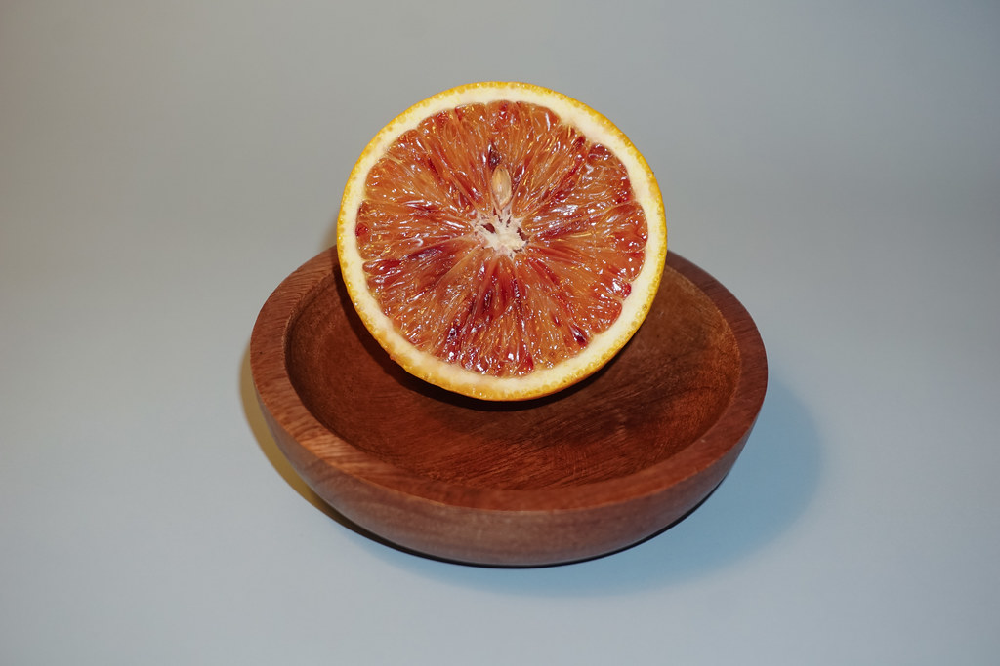
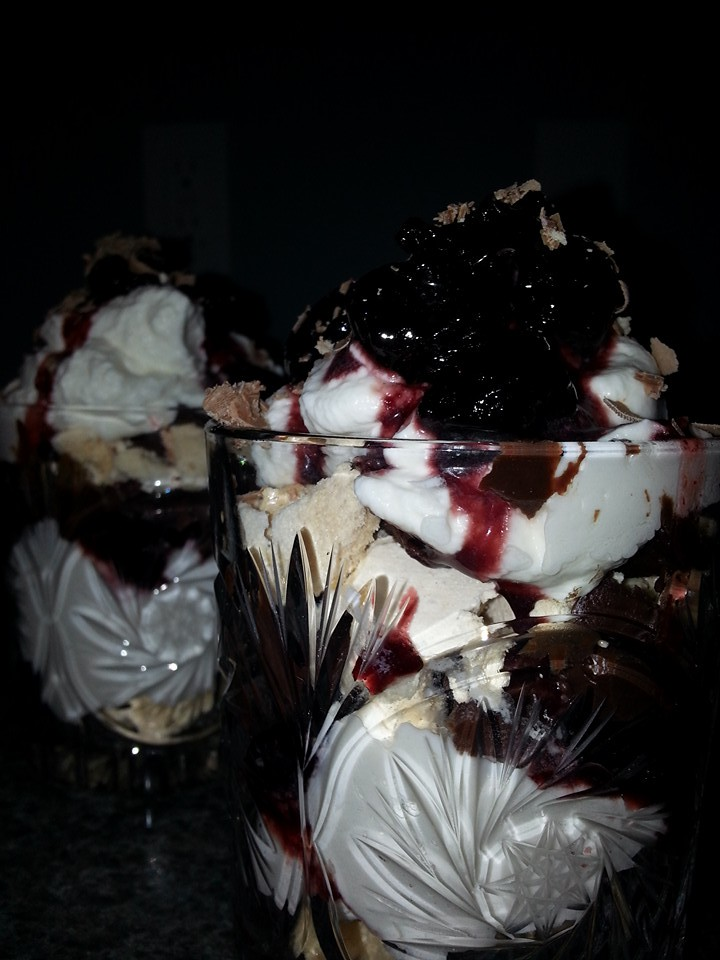

Anonymous
月替わりで生まれる、名もなきパフェ
About
ANONYMOUSという企画について
「ANONYMOUS(アノニマス)」は、CHILL KITCHEN BASEが月替わりで展開するテーマ企画です。パフェとして登場する月もあれば、サンドイッチやポトフといった軽食企画としてお目見えする月もあり、毎回どんな形で現れるかは告知を見るまでのお楽しみ。開催の頻度や内容は月・日によって異なるため、最新情報は必ずInstagramでご確認ください。
World
世界観

01
柑橘、あふれる。
しまなみレモン、せとか、不知火、土佐文旦、金柑――テーマごとに選ばれる柑橘が、グラスの底までふんだんに詰め込まれます。多くのパフェでは大きな果実をグラスの奥に隠しがちですが、ANONYMOUSはあえてそれをゴロゴロと見せる構成。ひと口ごとに、違う柑橘の甘み・酸味・ほろ苦さに出会えます。
柑橘のイメージ写真(過去テーマのイメージ)
02
層にとらわれない構成美
グラスを回すたびに赤、緑、オレンジ、レモン色と表情を変える、アシンメトリーな配色と配置。一般的なパフェの「層」という言葉では説明がつかないほど自由な構成で、素材ひとつひとつが主張しながらも、全体としてひとつの作品にまとまっています。
配色イメージ(写真ではなく色彩グラフィックです)

03
季節を映す細工
飴細工やメレンゲ細工による季節の装飾も、ANONYMOUSの見どころのひとつ。冬にはスノードームを模した飴細工や、ジンジャーブレッドマンの形をしたシナモンクッキー、メレンゲで作られたツリーなどが登場したこともあります。その時々の季節感が、ひと皿の中に閉じ込められます。
メレンゲ細工のイメージ写真
Reservation
ご予約について
ANONYMOUSのご予約・最新情報は、すべてInstagramで告知されます。
- Instagram(@chillkitchenbase_official)をフォロー
- 予約開始の告知投稿をチェック
- 告知された時間に、投稿内の予約リンクからご予約
人気のため、告知後すぐに予約が埋まってしまうことがあります。気になるテーマを見つけたら、告知の時刻をお見逃しなく。